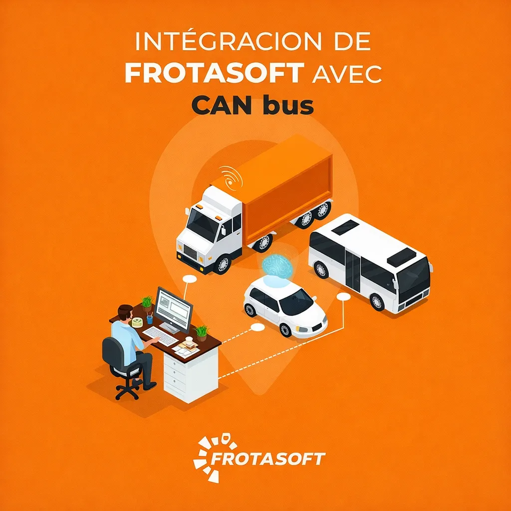
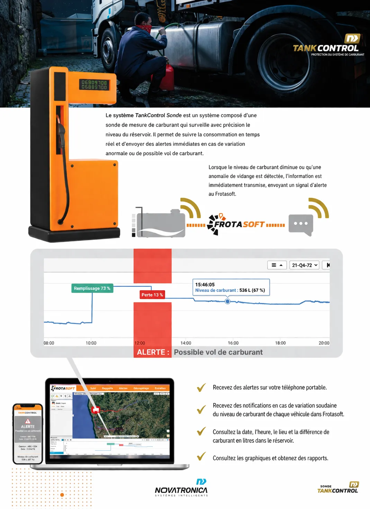
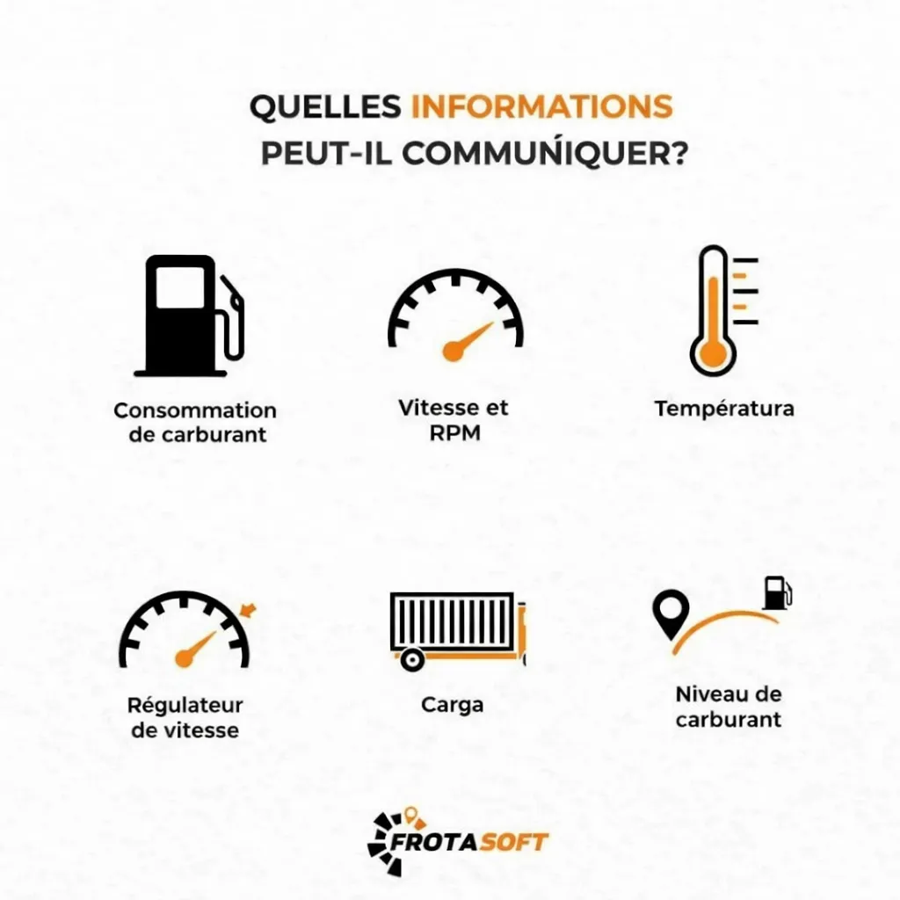
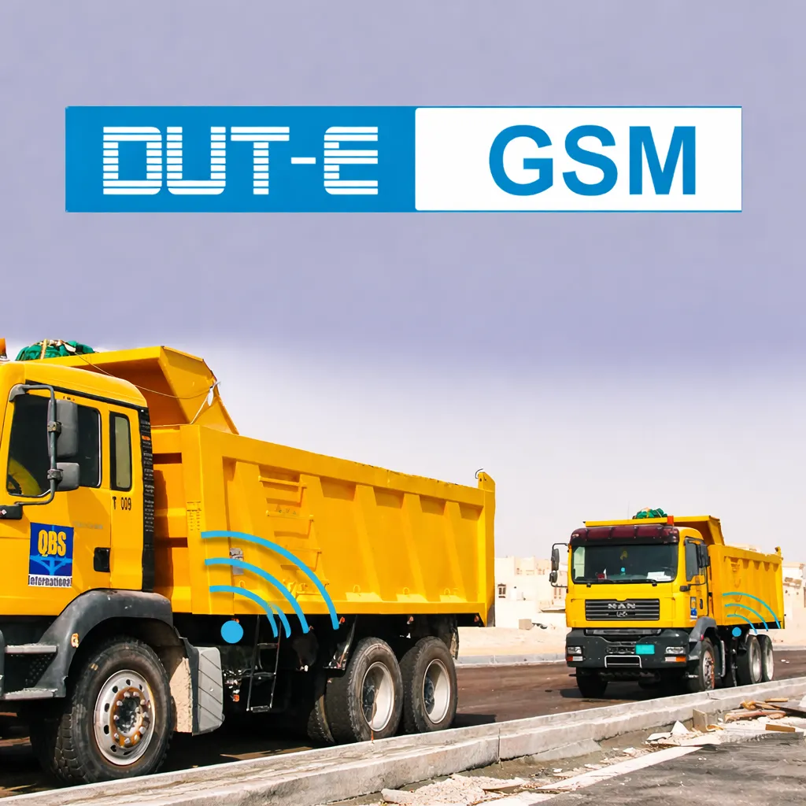

Des systèmes intégrés GPS/GSM pour la gestion intelligente de vos flottes et carburant.
ERM International Group propose une gamme complète de solutions technologiques permettant à nos clients de maîtriser chaque aspect de la gestion de leur flotte. Nos systèmes intègrent les dernières avancées en matière de GPS, GSM/GPRS et IoT embarqué.

Le système Frotasoft s'intègre au CAN bus des véhicules pour collecter et centraliser les données automatiquement, permettant une gestion intelligente de la flotte.
Intégration véhiculeTankControl permet de surveiller avec précision le carburant des véhicules, détecter toute anomalie et envoyer des alertes instantanées pour prévenir les pertes.
Surveillance carburant

Le système récupère des données clés du véhicule comme la consommation, la vitesse, la température ou encore le niveau de carburant pour une analyse complète.
Analytique avancéeLe dispositif DUT-E GSM assure la transmission des données des véhicules via le réseau mobile, garantissant un suivi fiable et continu.
Transmission mobile
En cas d'anomalie grave détectée (comme un vol de carburant important ou une utilisation non autorisée), le système peut automatiquement immobiliser le véhicule pour prévenir tout dommage supplémentaire et faciliter la récupération.
Lorsque le niveau de carburant commence à baisser, c'est-à-dire lorsqu'une consommation anormale de carburant est détectée dans le réservoir, l'information nous sera transmise immédiatement par le biais d'un signal d'alerte pour une intervention rapide.
Demander une démoCe système permet à nos clients de comptabiliser chaque millilitre de carburant fourni ou consommé et d'en connaître l'impact sur leur budget, de manière globale et individuelle, par véhicule, conducteur, trajet ou autres paramètres.
Un outil de travail professionnel qui génère des profits pour l'entreprise en éliminant le gaspillage, les reprises, les écarts, etc.
ERM fournit des rapports détaillés en temps réel sur la consommation de carburant et les niveaux de réservoirs, éliminant tout besoin d'appels téléphoniques ou de vérifications manuelles.
Permettez à nos clients d'optimiser leur budget carburant en analysant régulièrement leurs données et en identifiant les axes d'amélioration.
ERM intègre automatiquement les données de carburant dans vos systèmes internes pour une gestion transparente et optimisée.
Notre système de suivi du carburant élimine le besoin de tableurs Excel, de collecte manuelle de données et de documents papier. Les entreprises bénéficient d'une visibilité complète sur leur consommation de carburant, réduisent les pertes et optimisent leurs coûts opérationnels.
Les gestionnaires de flottes et autres acteurs ont accès à des données précises provenant de plusieurs véhicules, réservoirs, dans toutes les territoires du pays.
De nombreuses entreprises et commerçants des secteurs du transport, de la distribution de carburant sont victimes de vols quotidiens faute de systèmes de surveillance du carburant. C'est pourquoi le groupe ERM International accompagne ses clients pour garantir une surveillance continue.